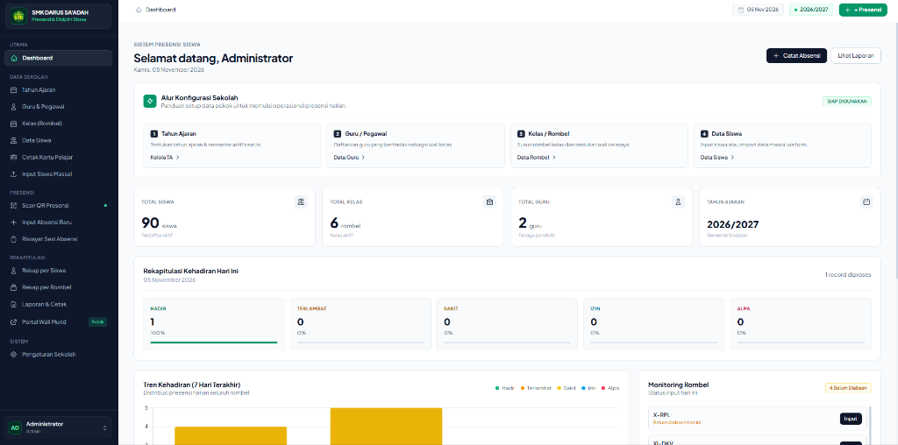

Aplikasi UKK Mandiri
Status: Siap Diuji
OnHadir — Presensi QR & Smart Card
Tugas Utama UKKSistem presensi sekolah terpadu yang dirancang untuk mengatasi antrean absensi pagi siswa. Menggunakan pemindaian barcode/QR webcam di bawah 300ms, tombol input massal sekelas (1-klik hadir langsung), perhitungan keterlambatan dan poin kompensasi otomatis, portal mandiri orang tua, serta generator cetak kartu pelajar standar CR80 (8 kartu/A4).
Laravel 11
SQLite / MySQL
Tailwind CSS
HTML5-QRCode
🔑 Akun Demo Penguji:
Admin: arrxptrr19@gmail.com / arya7777
Petugas: suteja77@gmail.com / suteja7777